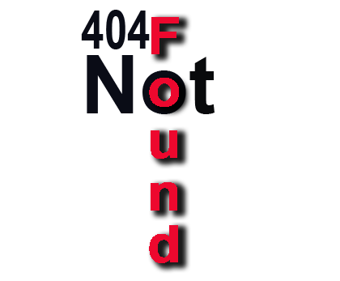

Kurzbeschreibung:
Die kleine Schlange Nimmersatt braucht deine Hilfe, sie findet ihr Futter nicht in dieser Riesen großen Welt. Führe sie zu ihrem Futter, doch gib Acht es liegt auch ab und an was auf dem Weg, was Nimmersatt nicht verträgt!
404-Not Found Group bringt das historisch bekannte Spiel Snake wieder auf den Markt. Mit neuen Features wird das Spiel zu einem kleinen Abenteuer.
Technische Daten:
Version: 1.0
Aktualisiert: 02. Oktober 2015
Größe: 264 MB
Sprache: Deutsch:
Browser: Safari v. 8.0.7
Mozilla Firefox v. 40.0.3
Google Chrome v. 45.0.2454.101m
Projekt: der Hochschule Fulda
Modul: Graphische Datenverarbeitung.
